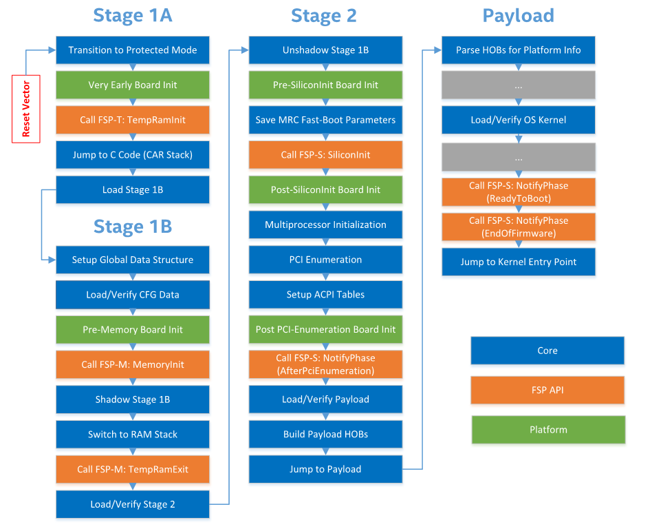

Boot Flow
SBL uses a linear staged boot flow to initialize platform and launch OS. It consists of four stages:
Stage |
Description |
|---|---|
Stage 1A |
Pre-memory initialization |
Stage 1B |
Initialize main memory |
Stage 2 |
Post memory initialization: initialize CPU, I/O controllers, devices etc. |
Payload |
Load, verify and launch OS images; or perform firmware update |
Note
When verified boot is enabled, each current stage verifies the next stage before transferring control to the next. If verification fails, one of two things occurs. If resiliency is enabled, the boot is swapped over to the alternate partition to recover the broken partition (see Firmware Resiliency and Recovery). Otherwise, the boot is halted.
Stage 1A
After coming out of reset, Stage 1A sets up the initial exectution environment to support the execution of the following stages. When the processor starts executing from the reset vector, writeable memory may not be available and a stack might have not been setup. So, the reset vector code is typically implemented using assembly language instructions. Stage 1A is also excuted from the flash (Read-only memory) and the lack of writeable memory prevents the usage of global variables.
Stage 1A contains a module called VTF (Volume Top File) which is placed at the top within the Stage 1A FV.
The VTF contains the reset vector code and hence the VTF needs to be placed at an appropriate
address so that the reset vector code in the the Vtf0 file (Identified by the GUID 1BA0062E-C779-4582-8566-336AE8F78F09)
aligns with the reset vector of Intel x86 architecture.
The entry point for the Stage1A module within the Stage1A FV (_ModuleEntryPoint) is placed as
the first DWORD of the built FV. The reset vector code from the Vtf0 jumps to this address and continues
from the _ModuleEntryPoint defined in SecEntry.nasm.
After coming out of reset, Stage 1A performs the following initialization steps:
Switch from 16-bit real mode to 32-bit protected mode to provide full 32-bit memory addressibility
Calls the FSP-T provided
TempRamInit()API which configures a temporary writeable memorySets up a stack in the Temporary memory initialized by FSP’s
TempRamInit()APIInitializes Stage 1A parameters, jumps to C code
Initializes Global Data structures (
LdrGlobal) to be used by the BootloaderInitializes the configured debug port by calling into Board-specific initialization functions
Loads and jumps to Stage 1B
The Stage 1B entry point is defined by the
_ModuleEntryPoint(provided byModuleEntryLib).
Data Passed from Stage 1A assembly to Stage 1A C code –
Stage 1A C code expects the struct
STAGE1A_ASM_PARAMto be on the stackSecEntry.nasmpushes the elements of the struct on the stack in the expected order
Data Passed from Stage 1A to Stage 1B –
Stage1A_PARAMstruct
Stage 1B
The primary purpose of Stage1B is to bring up the system memory and performs the following initialization steps:
Early platform init
Load and build configuration database
Calls FSP-M provided
FspMemoryInit()which initializes the system’s main memorySets up the global data structures in RAM and migrates LdrGlobal from the stack in temporary memory to the main memory
Saves system memory information like - TOLUM (Top of low usable memory), TOUUM (Top of upper usable memory), etc.
Switches from the stack in temporary memory to the one in the main memory
Calls FSP-M provided
TempRamExit()API to tear down the temporary memory set up in the cache and returns the cache to its normal operating modeLoads and jumps to Stage2
The Stage 2 entry point is defined by the
_ModuleEntryPoint(provided byModuleEntryLib).
Data Passed from Stage 1B to Stage 2
STAGE2_PARAMstruct
Stage 2
Stage 2 is the “post-memory” stage and is responsible for completing system initialization after main memory is available. Stage 2 code is run from main memory and may be compressed. Stage 2 includes relocation information which allows Stage 2 to be run from the main memory.
Stage 2 performs the following initialization steps:
Completes remaning GPIO initialization
Calls FSP-S provided
FspSiliconInit()API to initialize the chipset and I/O controllersPCI Enumeration and resource allocation
ACPI initlization
Prepares HOBs required by the payload
Calls FSP-S provided
FspNotifyPhaseAPIs -ReadyToBoot,EndOfFirmwareLoads and jumps to the payload. Stage 2 passes the HOB List pointer, and the Payload executable base to the payload.
// Payload Entry Point VOID EFIAPI SecStartup ( IN VOID *HobListPtr, IN VOID *PldBase )
LdrGlobal - Loader Global Data
The Loader Global Data structure is used to store important information throughout the different
execution phases of the bootloader. It consists of information like available memory start and
end addresses, top of stack address, performance data, HOB pointers, Config data pointers,
Payload ID, etc. The entire list can be seen in BootloaderCoreGlobal.h - LOADER_GLOBAL_DATA
struct. This data is passed from stage to stage until the bootloader passes control to the
payload. LdrGlobal is not passed to the payload. The data is however still maintained within
the bootloader reserved memory to be used for S3 resume.
Stage 1A creates the data structure (LOADER_GLOBAL_DATA) and a pointer to this structure on
the stack. Stage 1A adds the following info to LdrGlobal: Stack information, Available memory
top and bottom, temporary memory top and bottom, debug level.
Stage 1B retrieves the LdrGlobal pointer and appends more information to the data
(Key Hash Store, Config Database). Once Stage 1B has initialized main memory using FSP-M,
it creates the data structure in the memory reserved for the bootloader by FSP-M and copies
over the data from the earlier temporary memory. Stage 1B adds and updates several fields
in LdrGlobal like available memory top & bottom, DMA buffer pointer, S3 data pointer.
Stage 2 again retrieves the LdrGlobal pointer and appends the HobList pointer to the global
data struct to be used by S3 resume functionality.
Since LdrGlobal data is used across all stages of Slim Bootloader, a predefined or consistent
way to retrieve the LdrGlobal data is required. As interrupts are not used in the bootloader,
the IDTR is used to store the pointer to the LdrGlobal struct. BootloaderCoreLib abstracts this
location by providing GetLoaderGlobalDataPointer() and SetLoaderGlobalDataPointer() functions.
After creating the LdrGlobal, Stage 1A then saves the pointer to the structure by calling the
SetLoaderGlobalDataPointer() function. Stage 1B and Stage 2 use the GetLoaderGlobalDataPointer()
function to retrieve the location.
End-to-End Call Graph
The function call graph in SBL code from reset vector to OS launch.
{kind=link}
Note
This call graph changes if resiliency is enabled and recovery is attempted (see Firmware Resiliency and Recovery).
Platform Initialization
In SBL, board initialization code is located in Platform/<platform_foo> directory. Each stage provides a ‘hook point’ for board specific code. To port a new board, one should implement changes in BoardInit() function for each stage under Platform/<platform_foo>/Library directory:
VOID
BoardInit (
IN BOARD_INIT_PHASE InitPhase
);
During board initialization, SBL further divides the flow into multiple phases to provide a fine granularity control. These phases are defined in PlatformService.h:
typedef enum {
PreTempRamInit = 0x10,
PostTempRamInit = 0x20,
PreConfigInit = 0x30,
PostConfigInit = 0x40,
PreMemoryInit = 0x50,
PostMemoryInit = 0x60,
PreTempRamExit = 0x70,
PostTempRamExit = 0x80,
PreSiliconInit = 0x90,
PostSiliconInit = 0xA0,
PrePciEnumeration = 0xB0,
PostPciEnumeration = 0xC0,
PrePayloadLoading = 0xD0,
PostPayloadLoading = 0xE0,
EndOfStages = 0xF0,
ReadyToBoot = 0xF8,
EndOfFirmware = 0xFF
} BOARD_INIT_PHASE;